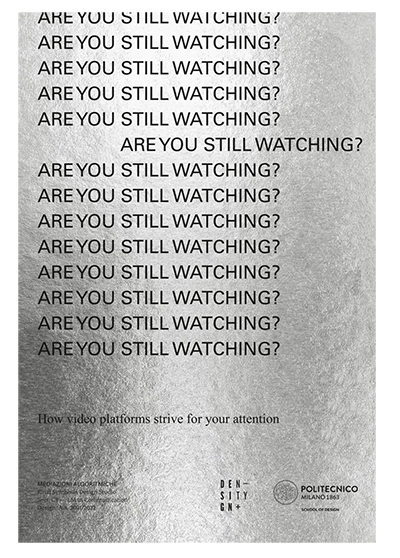
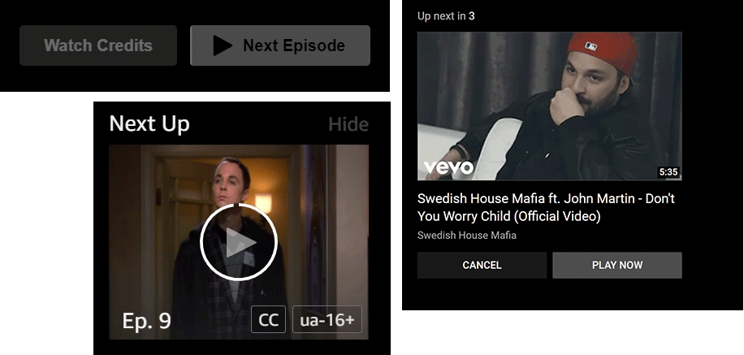
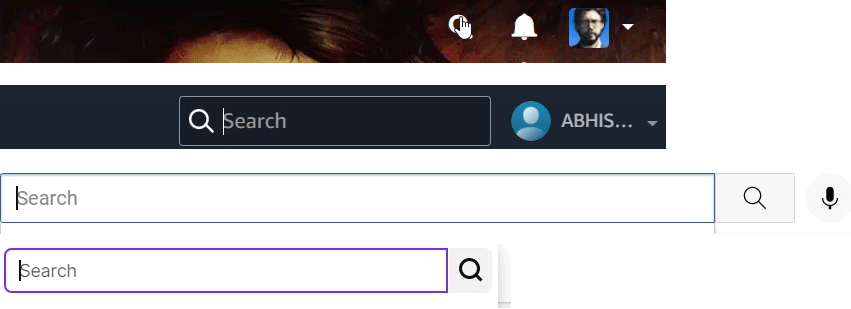

“Attention War” is a web project about the role of streaming platforms’ interfaces with the intent of reflecting on how they are ultimately aimed to keep subscribers on the services and induce content consumption. Through a series of interactive experiences, it presents a selection of strategies implemented by streaming platforms and uses data to expose them. This research project was developed during the 2021-2022 Final Synthesis Design Studio C3 at Politecnico di Milano, MA in Communication Design.
Streaming platforms and their strategies for user retention
The streaming world has dramatically expanded over the past few years. Competition among video streaming platforms has become more and more fierce, as they long for users’ attention. Meeting everyone’s needs and tastes seems to be the right way to maintain dominance. “Decision fatigue” is one of the worst threats to these services’ success: the task of choosing something to watch can be a tortuous process. It can overwhelm users and discourage them if they are unable to find something interesting within a short time. In response to these challenges, streaming platforms have been implementing their interfaces with various strategies, ranging from autoplaying video trailers to providing user-tailored recommendations.

The research behind the project comes from
Are You Still Watching?
, a printed report redacted by our group during a previous phase of the course. The
investigation was conducted on four main video streaming platforms: Netflix, Prime
Video, YouTube and Twitch. These four were selected because they represent various types
of video providers that, when compared, present differences and similarities in terms of
content fruition.
The research was centered around two separate moments of the user experience
on streaming platforms: the process of selecting what to watch and the actual fruition
of content. The aspects analyzed range from the way of presenting the content library
for both active (through the search bar) and passive (from the homepage) search
experiences, to the ways of dealing with decision fatigue, with a general focus on the
strategic or manipulative features implemented in the interfaces.
Dataset
Data for the research was collected by analysing different parts of the platforms’
interfaces – the homepage, the search tab, the content player – contextualised in the
different stages of the user’s experience during the navigation, going from the
exploration of the content library to the conclusion of the content’s fruition. While
examining the pages, few key elements of the interfaces were selected, isolated and
analysed with a comparative approach across all platforms, so as to allow a critical
perspective on the user’s interaction with streaming services while also looking for
differences and similarities.
The above mentioned key elements included:
(1) The content
library in the homepage, investigated by counting the number of content presented, split
between content that is shown immediately when landing on the site and content that is
accessed through interaction (on scroll and on click)

(2) The autoplay function, and the series of steps and interactions needed to
disable it

(3) The search bar and the results obtained on the different platforms for
comparable queries and conditions.

This research method ultimately led to defining a taxonomy of techniques and
features generally employed by platforms to retain users and establish their spot in the
ever-so-competitive streaming market:
- Carefully-designed layouts for displaying content, more or less intended to prevent decision fatigue in the user;
- Strategic positioning of the autoplay disabling setting;
- Well-engineered search algorithms, meant to provide the right options at the right time
Because these platforms' user interfaces are updated very frequently (although major changes are more dilated in time), this analysis must be considered relevant to the time frame between October and December 2021, during which the data were collected.
Method
For each selected element to be analysed, data was collected from the platform itself. The below table provides information on what data we collected and the methods followed to do them. 
The research from the report has been adapted to be suitable for the web. The
possibilities of the digital world allowed us to present both the results and the
methods of the research in a more accessible way. Each data visualization has been
re-designed into an interactive web experience to allow users to directly experience the
process behind our analysis and how data has been collected.
The communication aim of the project is to provide a narrative about the
topic that, through both a quantitative and a qualitative analysis, uses data to raise
awareness of the topic, by tracing and recording data that is not usually perceived,
like how many pixels you scroll when browsing a streaming platform’s homepage or the
path of the actions you perform. This enables a reflection on our everyday interactions
with platforms and how the paradigm of the hyper-personalisation culture has shaped our
content consumption habits.